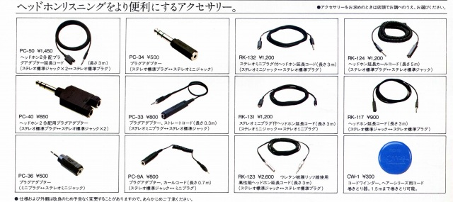
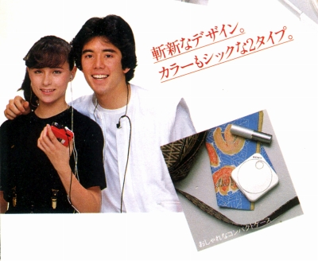
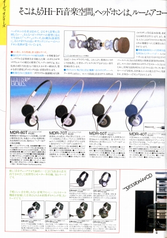
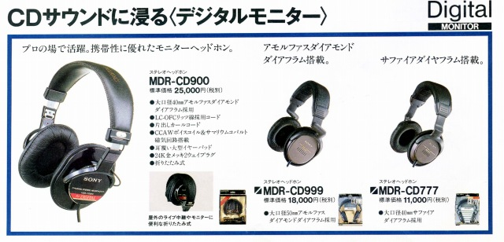

ソニー カタログギャラリー
(カタログ画像をクリックすると原寸大のPDFファイルが開きます。しかしファイルサイズが大きいのでご注意ください）
(1)1976.9月版カタログ
表紙は当時のフラグシップモデル＝ECR-500。
(2)1978.2月版カタログ
表紙は生録用モニターモデル＝DR-6M。一緒に写っているのはカセットデンスケTC-3000SD。
(3)1978.2月版カタログ
表紙はDR-Ｓ７とDR-Z7。フラグシップモデルはECR-800（アダプターとシステムでECR-880）だが、この時点ではECR-500と併売。
(4)1978.7月版DR-Sシリーズカタログ
DR-Ｓシリーズのカタログ。
(5)1979.4月版カタログ
表紙はDR-Ｓ７とDR-Z7で別バージョン。
(6)1980.10月版カタログ
表紙はMDR-7。

当時はステレオミニジャック・プラグがまだ一般化していなかったので、急に関連アクセサリーが増えた。
(7)1980.10月版MDR-FM7カタログ
基本的にはFMチューナ内蔵ヘッドフォンだが、後にFMトランスミッターが発売され、コードレスとしても使用できた。
(8)1982.5月版MDR-E252カタログ
ソニー初のインナーイヤー型、MDR-E252のカタログ。

(ホワイトモデルを女性向き、ブラックモデルを男性向きとしているようだ）
(9)1982.9月版カタログ
1980.10月版カタログと同様に、型番が「DR」から「MDR」に変わる移行期のもの。

（DR」から「MDR」の移行期ではあるが、「DR」型番はカタログの隅にわずかに掲載されるのみ）
(10)1985.3月版ヘッドホン・ラインアップ
おそらく正規のカタログとは違った資料。正規のカタログは左開きだが、こちらは右開きの資料である。
(11)1986.11月版カタログ
表紙はMDR-A60。ルイジ・コラーニデザイン。この時点でのフラグシップモデルはMDR-CD900だが新発売ではない。
(12)1988.11月版カタログ
表紙はMDR-CD999。
(13)1989.4月版カタログ
表紙はMDR-R10。この時点ではまだネオジウムマグネット採用モデルはなかった。
(14)1991.9月版カタログ
表紙はMDR-R10とMDR-CD3000。

中をみると、デジタルモニターシリーズでは旧機種であるMDR-CD900がメインで、当時の最新機種であったMDR-CD999の方が小さく、しかも品薄となっている。MDR-CD999はMDR-CD900や次のMDR-Z900よりも音楽鑑賞向きと評価する意見もあるが、ヘッドバンドの材質・強度に問題があったようだ。破損と戦うオーナーの奮闘がネット上でみられる。
(15)1992.10月版カタログ
表紙はMDR-D77。MDR-D77はこの時点ではまだ発売されておらず、「近日発売」となっていた。当時の新製品はMDR-Z900。
(16)1994.6月版カタログ
表紙はMDR-D77とSRS-N100"ウク・ラーラ”。このあとはアクティブスピーカーと合同のカタログが続く。
(17)1995.2月版カタログ
表紙はMDR-D77とMDR-CD270。当時はデジタルリファレンスシリーズの世代交代の時期だが、下位機種から入れ替えており、MDR-CD1700等上位機種はまだ登場していない。当時の新製品はロングランモデルとなったMDR-E888。
(18)1995.11月版カタログ
表紙は上段左からMDR-D77、MDR-E888、SRS-T50、下段はSRS-D300とMDR-IF320RK。デジタルリファレンスシリーズの世代交代はまだ続いていた。当時の新製品はバーチャルホンVIP-1000。
(19)1996.6月版カタログ
表紙はノイズキャンセリング・フォンのMDR-NC20とコードレスのMDR-IF125RK。メインの写真はその2機種の合成画面である。「ボリュームはマナーです。」の表記が表紙に記載されるようになっている。
(20)1997.2月版カタログ
表紙は96年6月版と同様にノイズキャンセリング・フォンのMDR-NC20とコードレスのMDR-IF125RK。表紙は同じ人物でのバリエーション違いか？
(21)1998.2月版カタログ
表紙はMDR-G61。当時の新製品はMDR-F1。
(22)1998.10月版カタログ
表紙はMDR-G62。98.2月カタログと構図は同じだがヘッドフォンのみ変わっている。
(23)1999.5月版カタログ
表紙はMDR-G62。
(24)2000.7月版カタログ
表紙はMDR-Q33。デジタルリファレンスシリーズは第３世代へ交代。